50 вариантов сайта. Главный референс — END. Clothing. Внутри всё из переписки: логотип в 3 строки с засечками, сворачивание в «TRS», мобильный макет друга (Меню / лого / Корзина, Мужское/Женское, карусель, пилюля-фильтр), его сиреневый и зелёный, плитки «Под заказ / В наличии», Retrosuperfuture. Товары — реальный каталог ЧОЙЗ (24 позиции). Нажмите на карточку товара в любом макете — откроется шторка.
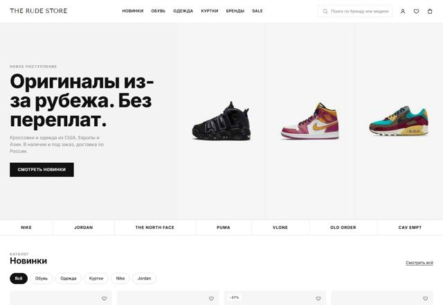
Ближе всего к END.: белый фон, меню по центру, лонч-баннер, бренды, сетка 4 в ряд. Логотип — в одну строку, как у END.
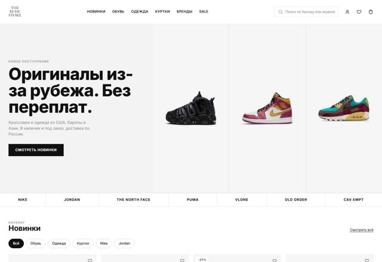
Та же сетка END., но в шапке трёхстрочный логотип друга. При скролле он сворачивается в «TRS».
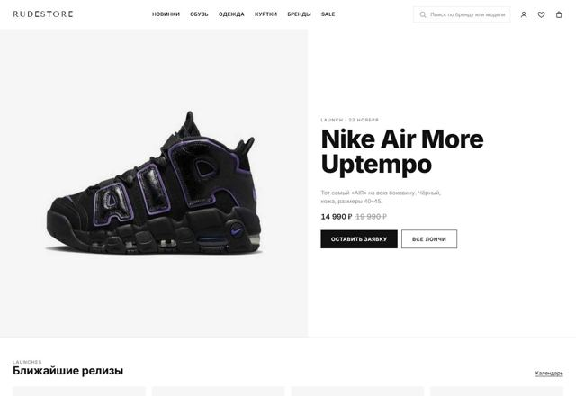
Главная построена вокруг релизов, как раздел Launches у END.: один товар героем и календарь дропов.
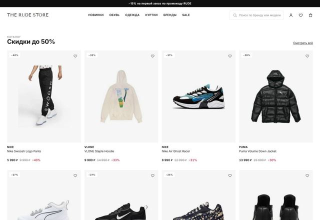
Акцент на скидках: красные проценты, сортировка по размеру скидки, полоса «−15% на первый заказ».
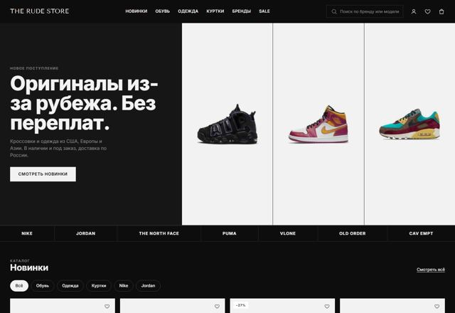
Тёмная версия END.: чёрный фон, светлые плитки товаров, белый текст.
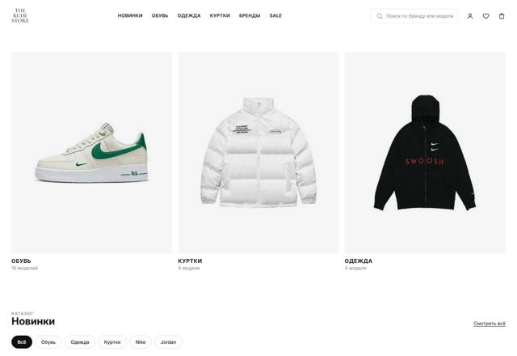
Крупные карточки по 3 в ряд, квадратный кадр, на мобиле по 2. Товар виден лучше всего.
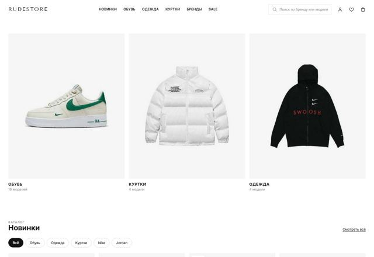
Сначала три большие категории, потом новинки и скидки. Удобно, когда товаров станет много.
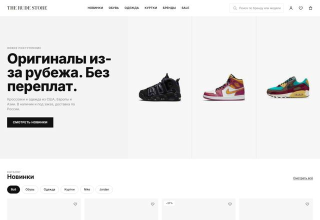
END. с журнальными блоками: крупная фраза бренда и пара фото между сетками.
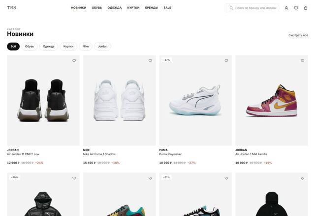
Почти без украшений: только шапка, фильтры и сетка. Самый быстрый путь к товару.
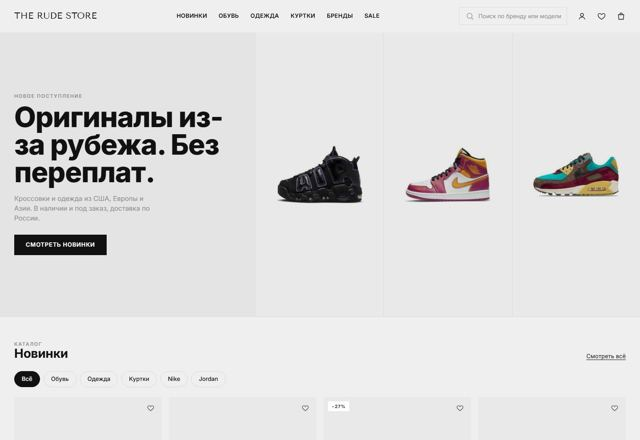
Плитки товаров и страница одного серого цвета: фото «растворяются» в фоне, как при пересвете через ИИ.
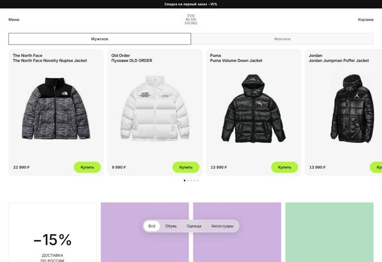
Его мобильный макет один в один: чёрная полоса «−15%», Меню / логотип / Корзина, вкладки Мужское/Женское, карусель с «Купить», зелёный акцент.
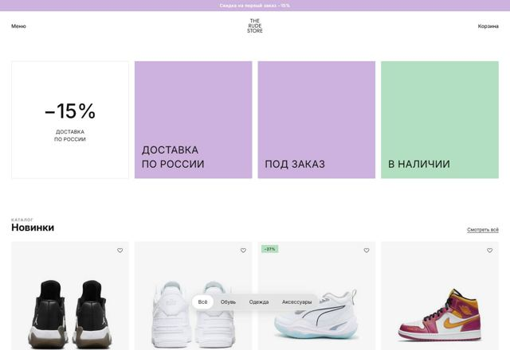
Его цвета из постов для Instagram: сиреневый #CBB1DC и зелёный #B2DFC0. Плитки «Под заказ», «В наличии», «Доставка по России».
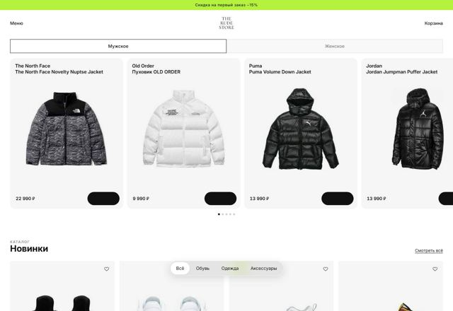
Зелёный неон #B5F23D из его карусели вынесен в главный акцент: кнопки, бейджи скидок, активная вкладка.
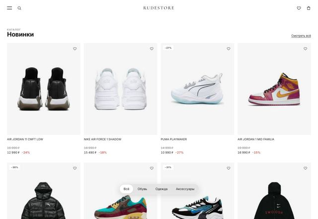
Нижняя «пилюля» Всё / Обувь / Одежда / Аксессуары из его мобильного макета. Работает как фильтр, карточки в его стиле: название капсом, старая цена над новой.
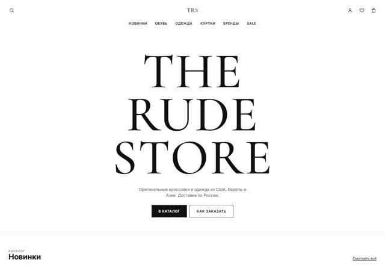
Как он предлагал: на главной огромный логотип в 3 строки, на внутренних страницах — только «TRS». Шрифт с засечками, без иллюстраций.
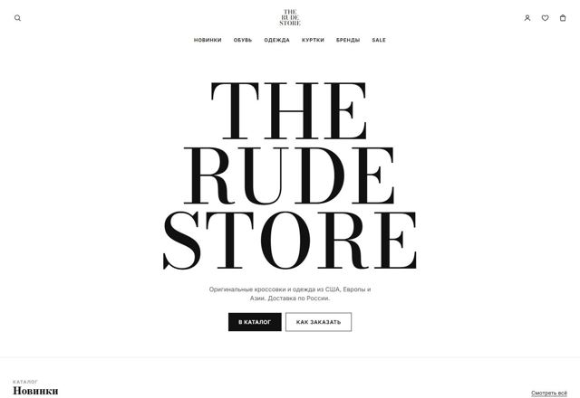
Контрастный шрифт с засечками (Bodoni) на всём сайте: заголовки, цены, логотип. Выделяется среди «плоских» логотипов, как он и хотел.
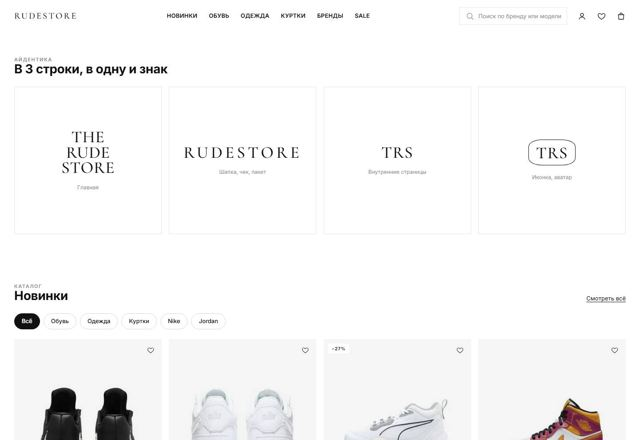
Показывает систему знака целиком: 3 строки — на главной, 1 строка — в шапке, «TRS» — в иконке и на внутренних страницах.
В шапке только знак «TRS» в скруглённой рамке, как иконка приложения. Максимум места товарам.
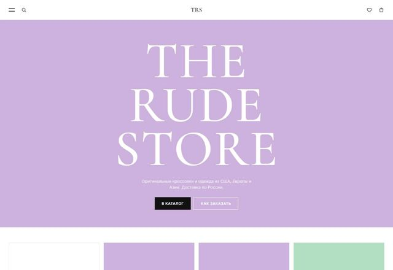
Трёхстрочный логотип на сиреневом фоне друга, ниже белая сетка.
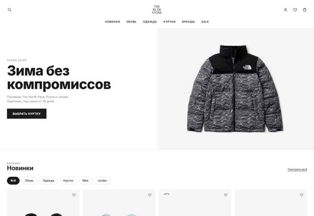
Более мягкий шрифт с небольшими контрастами (Belleza), спокойные плитки, без чёрного.
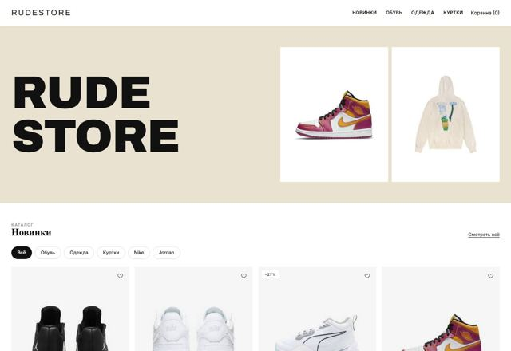
Его второй референс: крупная плоская типографика, цветные плашки, редакционные блоки.
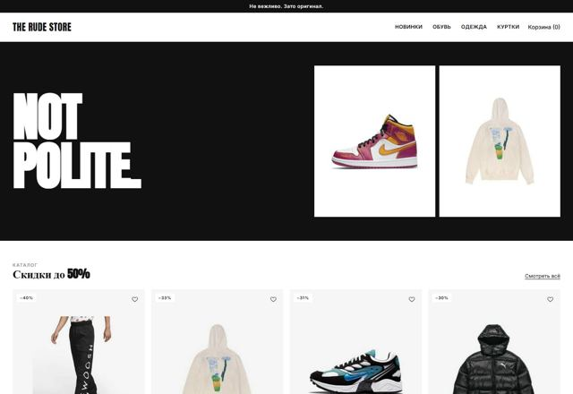
Дерзкая версия под название: узкий жирный шрифт, капс, красные скидки.
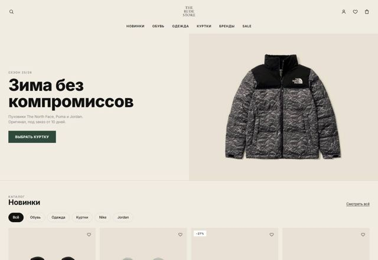
Бумажный беж и тёмно-зелёный, шрифт с засечками. Ближе к винтажным магазинам.
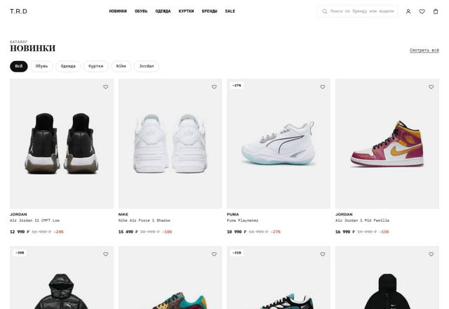
Моноширинный шрифт для цен и подписей, строгая сетка и тонкие линии. Как у технических брендов.
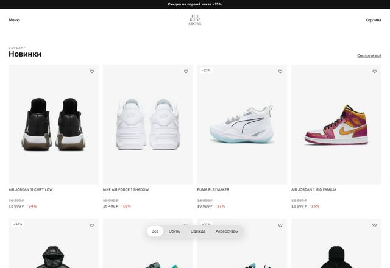
Сделан от телефона: шапка друга, нижняя пилюля-фильтр, крупные карточки по 2. На компе тот же вид, только шире.
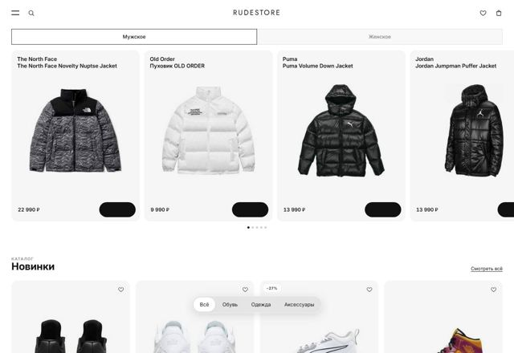
Мягкие скруглённые карточки и кнопки-пилюли, как в его мобильном макете.
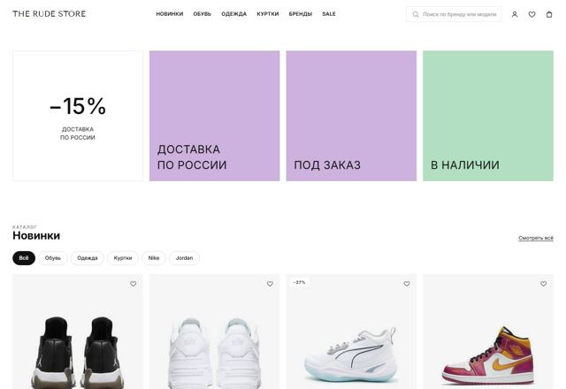
Каждая карточка подписана «В наличии» или «Под заказ», цвета из его плиток: зелёный и сиреневый.
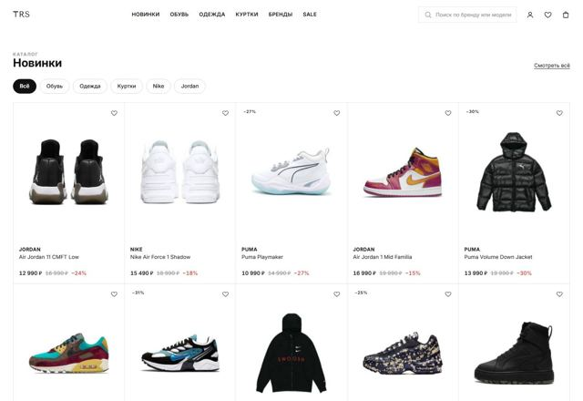
Плотная сетка 5 в ряд без отступов, тонкие линии между товарами. Для большого ассортимента.
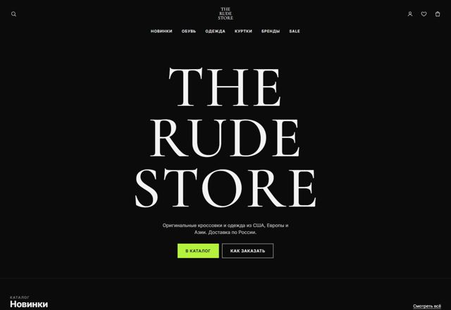
Чёрный фон, неоново-зелёные акценты из макета друга, логотип в 3 строки.
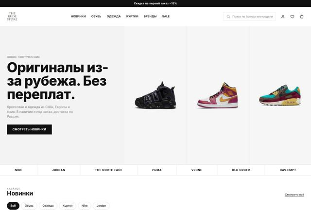
Сборка лучшего: сетка и меню END., логотип друга в 3 строки (сворачивается в TRS), его плитки, лончи и скидки. Рекомендую как основу.
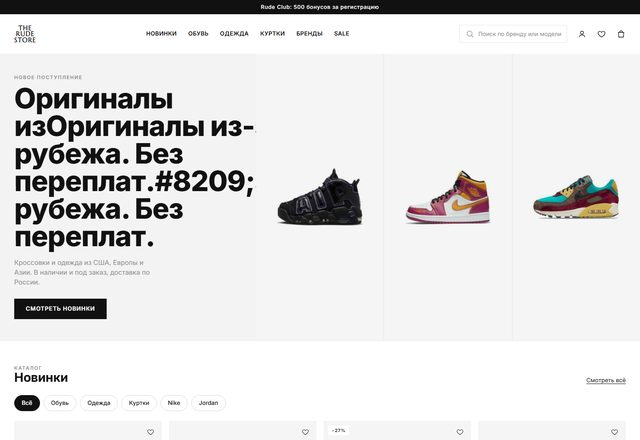
Своя программа лояльности на главной: 3 уровня (3/5/7% бонусами), ранний доступ к дропам, «приведи друга». Взято лучшее у SuperStep и Street Beat, но правила влезают в один экран.
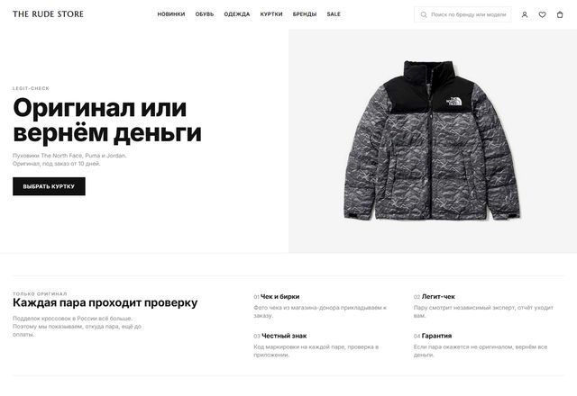
Главная продаёт доверие: чек, легит-чек, Честный знак и гарантия возврата идут сразу после первого экрана. Главная боль покупателя ресейла в 2026 — подделки.
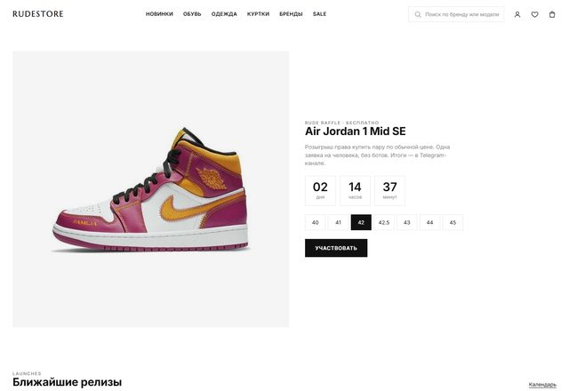
Розыгрыш права покупки, как у END. Launches и Kith: таймер, выбор размера, одна заявка на человека. Даёт ажиотаж и подписчиков в Telegram.
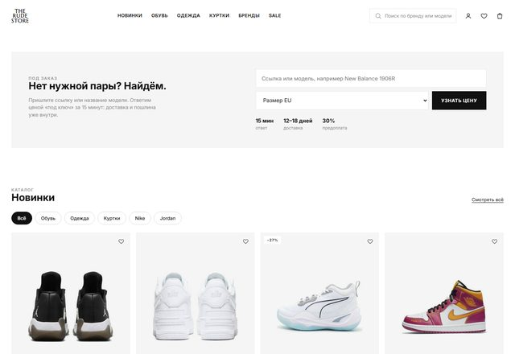
Модель Unicorn и посредников Poizon: форма «пришли ссылку — назовём цену под ключ» первым экраном. Каталог — вторым. Под ваш формат работы подходит лучше всего.
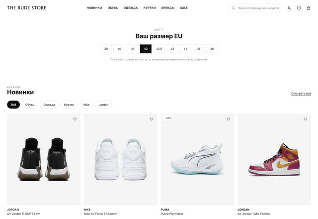
Выбираешь размер EU — видишь только свои пары. Самая частая жалоба в ресейле: «понравилось, а размера нет».
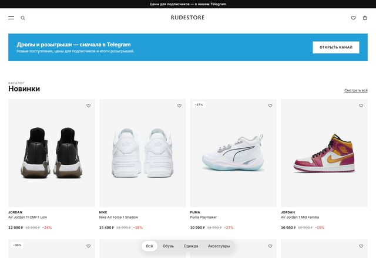
Сайт как витрина для канала: каждая секция ведёт в Telegram, где дропы, розыгрыши и цены для подписчиков.
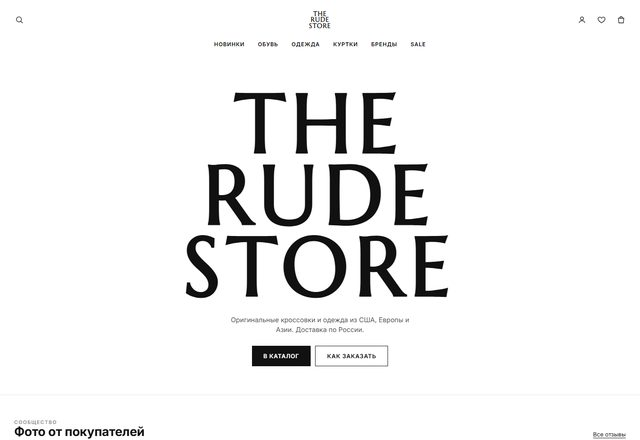
Отзывы с фото покупателей, розыгрыш и клуб. Работает на доверие, когда бренд ещё молодой. Отзывы-заглушки заменить на реальные.
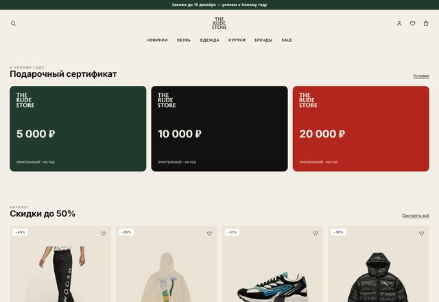
Сезонная версия к декабрю: сертификаты 5/10/20 тыс., скидки, тёмно-зелёный и бумажный фон.
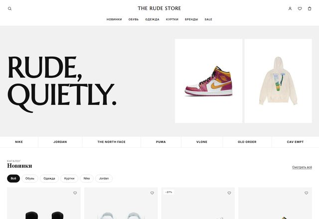
Как у Kith: лого по центру, тихая типографика, журнальный блок, бренды. Дорогой вид без лишних цветов.
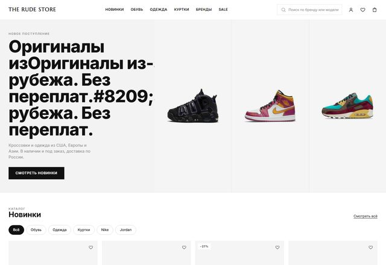
Сетка END., а в конце страницы логотип на всю ширину экрана. Модный приём 2025–2026: бренд запоминается при прокрутке до конца.
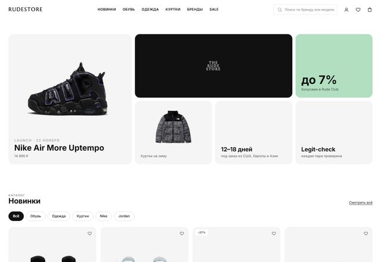
Главный тренд витрин 2026: блоки разного размера, как плитки в приложении. Лонч, логотип, клуб, сроки и легит-чек на одном экране.
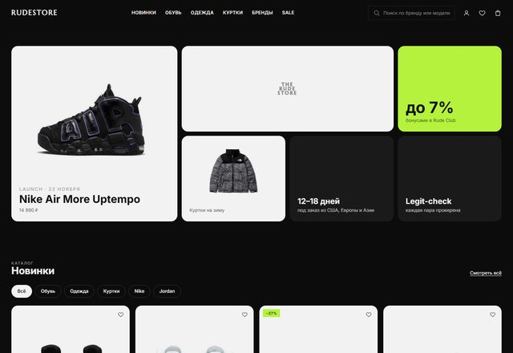
Та же bento-сетка на чёрном, акцент — неон друга #B5F23D.
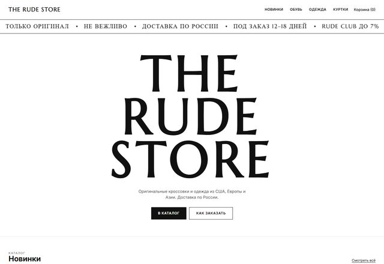
Бруталистская версия: бегущая строка с обещаниями магазина, огромное лого, тонкие линии. Подходит под «rude».
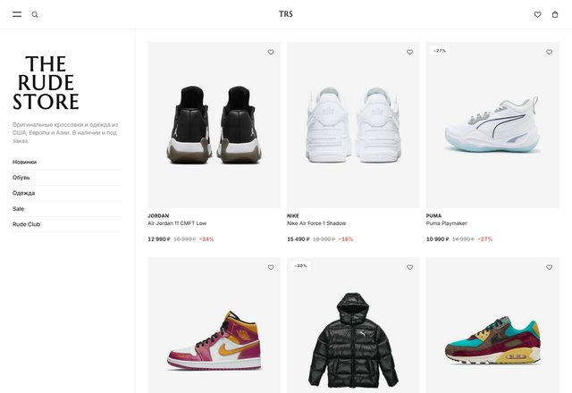
Слева липкая колонка с логотипом в 3 строки и меню, справа листается каталог. Как у нишевых бутиков.
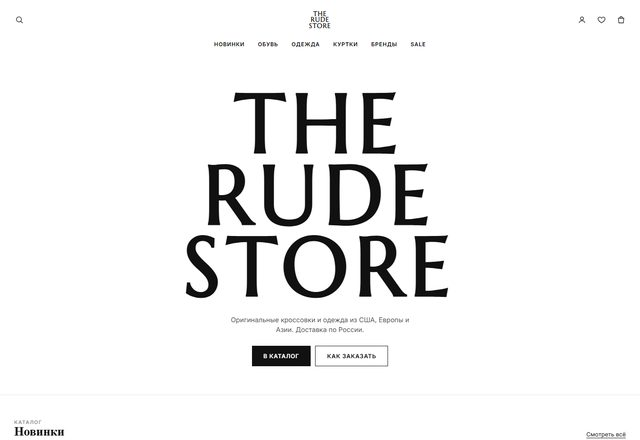
Шрифт логотипа в заголовках и ценах. Самый цельный вариант: сайт выглядит одним брендом с логотипом.
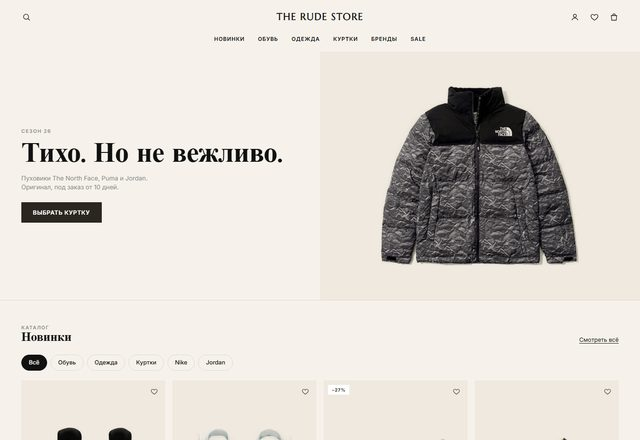
Тёплый беж, много воздуха, Marcellus в заголовках, без красных скидок. Позиционирование «дорого, но честно».
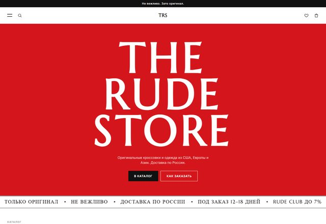
Красный экран с белым логотипом в 3 строки, дальше белая сетка. Громко, но в рамках логотипа.
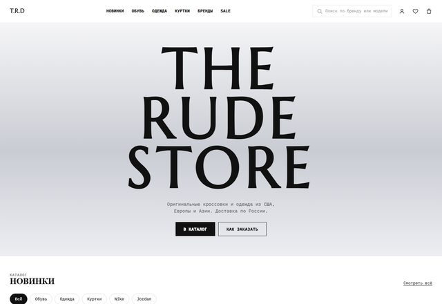
Серебряный градиент, тонкие линии, моно-подписи. Тренд Y2K 2025–2026 в спокойной дозе.
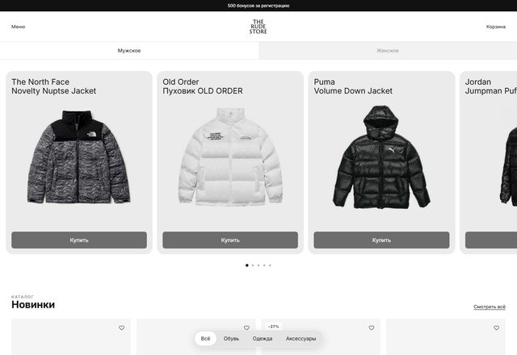
Мобильный макет друга + клуб и Telegram: нижняя пилюля-фильтр, бонусы и ранний доступ прямо на главной.
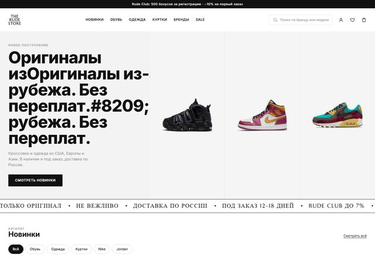
Рекомендую как основу сайта: сетка END., логотип в 3 строки (сворачивается в TRS), блок «Только оригинал», под заказ за 15 минут, розыгрыш, Rude Club, Telegram и большой логотип внизу.